Feitoria da Cerveja · PUB Mogi · cerca de 9 minutos
A narração usa a voz em português do próprio aparelho. Sem som, a legenda e o tempo de cada cena seguem iguais. Depois do vídeo, faça o teste na página de treinamento do salão.